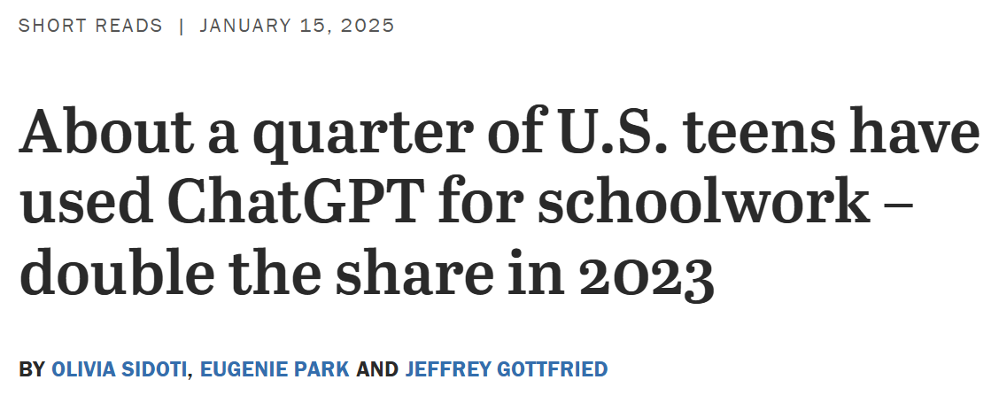
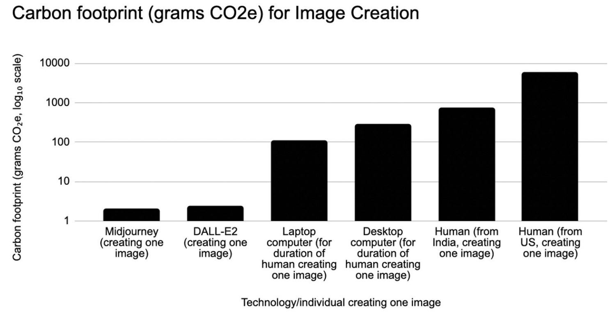
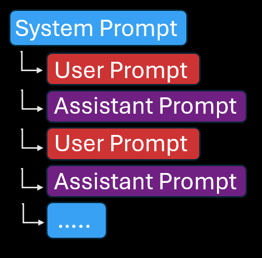
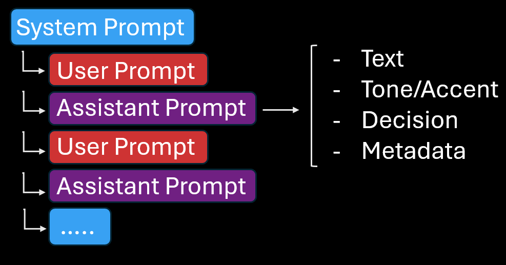

Using
Large Language Model
Agents in Behavioral Experiments
Clint McKenna
February 13th, 2025
Pew Research Center (2025)
...OpenAI will retain API Service Customer Data sent through the API for a maximum of thirty (30) days...
OpenAI Data processing addendum (2024)
...OpenAI may continue to process information derived from Customer Data that has been deidentified, anonymized, and/or aggregated such that the data is no longer considered Personal Data...
OpenAI Data processing addendum (2024)
Using oTree
for LLM Behavioral Experiments
Chen, Schonger, Wickens (2016)
Optimistic Updating Metrics

Sharot et al. (2011)
Pattern of Awareness
- More updating towards desirable outcome = Higher awareness
- More updating towards undesirable outcome = Lower awareness
Study 1
Optimistic Updating
News Type predicted
average updating
amount

β = 2.85, p < .001
Error Bars 95% CI
Error Bars 95% CI
More updating predicts a greater reported awareness

β = .12, p < .001
Effect did not vary by News Type

β = -.01, p = .253
Study 2
2022 Midtern Election
News Type predicted
average updating
amount

β = 1.61, p < .001
Error Bars 95% CI
Error Bars 95% CI
No relation between updating and awareness

β = -.01, p = .108
Effect did not vary by News Type

Study 3
Yoked Participant Perceptions
News Type predicted
average perceived
bias

β = -.16, p = .006
Error Bars 95% CI
Error Bars 95% CI
No main effect of updating on perceived bias

β = .0001, p = .993
Effect was moderated by News Type

β = .04, p < .001
Effect was moderated by News Type

β = .04, p < .001